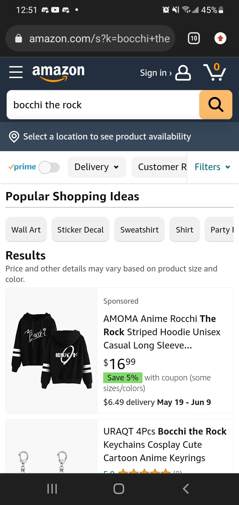
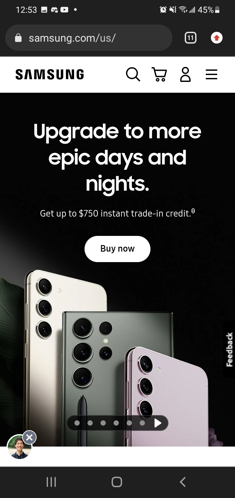

Proximity
Amazon
amazon.com I think that this is a good example of proximity, with the proper elements being in close together. The price and relevant savings are close, the delivery information is close, the suggested product types are close.
Fitt's Law
Samsung
samsung.com What Fitt's law says to me is to keep the buttons you want to be pressed to be close to the cursor and big. Samsung is a company that sells phones, and what else is right in the middle of everything, but an enticing button that says, "Buy!"
Repetition
The multiple options available on the google account page are very intentionally similar. They all have the same frame, build, and even placement of links. This looks like a prime example of repetition.